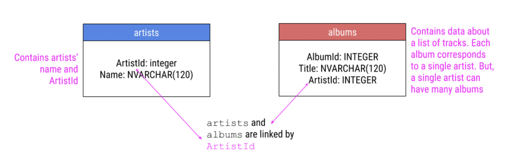

Code
sqlite <- dbDriver("SQLite")The goal of this lab is to introduce you to the concept of importing data into R. In the previous labs, we have been using data that is already available in R or in R packages. However, in real life, you will often need to import data from external sources such as Excel, CSV, or text files. In this lab, we will learn how to “import” data into R from various sources including:
In this lab, you will need the following packages.
readxl for reading excel filesgooglesheets4 for reading data from Google SheetsRSQLite for connecting to databasesTidyverse packages:
readr for reading CSV and TSV files. Part of Tidyverse.dbplyr for working with relational data. Part of Tidyverse.dplyr for data manipulation. Part of Tidyverse.Start by installing any packages that you don’t already have (likely the first three) then create a code chunk for loading the packages. Note that package installation is to be done in the console using the install.packages("package name") command.
Load packages in the packages code chunk as shown below:
library(readxl)
library(googlesheets4)
library(RSQLite)
library(tidyverse)Reading excel files into R is made possible by the readxl package (installed above).
To read an excel file into R, we use the read_excel() function from the readxl package. Follow these steps:
Obtain your excel data (.xslx) data set and upload it into your project (files section) using the upload option.
Click on the file then choose the import dataset option (see figure below). This will open a pop-up window that shows a preview of the data set and the file path. Click on import.

Finally, open a code chunk for your data and use the read_excel() function to read the file into R as shown below. If the file is in a folder, make sure to set the correct path.
read_excel("filename.xlsx")Practice: You received an email with an attachment of an excel data set named absenteeism. Read file into your R.
Google is a popular cloud-based platform for storing and sharing data. To read data stored in Google sheets, we the package googlesheets4.
The fact that Google documents live in the cloud makes sharing and updating data easy especially if there are multiple people collaborating on the same project. Since googlesheets4 allows R to read the data from Google directly, you do not have to download the data. If you share a link with edit privileges, people can enter the data directly and you can analyze it in real-time.
Since R and Google Sheets are different products, the two have to communicate in some way. This happens through what is known as Application Programming Interface (API). APIs are means through which different applications are able to communicate with one another. Google has an API that allows R to communicate with Google Sheets. To use this API, you will need to authenticate your R session with Google every time.
To set up the connection between Google Sheets and R, start by running the command gs4_auth() in the console. This will open a new page in your browser that asks you which Google account you’d like to have access to. Click on the appropriate Google user to provide googlesheets4 access to the Google Sheets API. After this, you will be given a code that you will need to copy and paste into your R console. This will authenticate your R session with Google Sheets.
The last step is to read the data into R. We use the function read_sheet() for this. The function takes the URL of the Google Sheet as an argument. The URL can be obtained by clicking on the share button on the Google Sheet and copying the link. Make sure you have the correct permissions to access the data.
As an example, we will read in a data set available on the link https://docs.google.com/spreadsheets/d/1pEJ6vuGmyWrNPjHSorvIANAAvGBctRgpp1_mEBZkN-Q/edit?usp=sharing This is the same absenteeism data set that we read from an excel file earlier. Use the code below (notice that we are saving the data as g_sheet):
g_sheet <-read_sheet("https://docs.google.com/spreadsheets/d/1QCSV stands for Comma Separated Values. It is a simple file format used to store tabular data, such as a spreadsheet or database. CSV files are plain text files that contain data separated by commas and are preferred by many data scientists because of their simplicity. To read a CSV file into R, you can use the read_csv() function from the readr package. The readr package is part of the tidyverse package, so you do not need to install it separately if you have tidyverse already. The process for reading in csv files is very similar to that of excel file.
Here are the steps:
Obtain your CSV data set and upload it into your Project (files section) using the upload option.
Click on the file then choose the import dataset option. This will open a pop-up window that shows a preview of the data set and the file path. Click on import.
Finally, open a code chunk for your data and use the read_csv("filename") function to read the file into R as shown below. If the file is in a folder, make sure to get the correct path.
Practice: Download the csv file named baby_names from the the sits https://www.openintro.org/data/index.php?data=baby_names and read it in your R project.
Another common form of data is text files that usually come in the form of TXT or TSV file formats. Like CSVs, text files are simple, plain-text files; however, rather than columns being separated by commas, they are separated by tabs (represented by ” in plain-text). Like CSVs, they don’t allow text formatting (i.e. text colors in cells) and are able to be opened on many different software platforms. This makes them good candidates for storing data.
To read a TSV file into R, you can use the read_tsv() function from the readr package. The process for reading in TSV files is very similar to that of CSV files.
Up to this point, we have considered data stored as a single file in various formats. However, in many real life scenarios, data are often stored in databases. A database is a collection of data that are organized so that they can be easily accessed, managed, and updated. A key point to note about databases is that they are designed to store large amounts of data. There are many types of databases, but the most common ones are relational databases.
In a relational database, data is stored in tables, and the tables are related to each other. As an example, consider a college database that has several tables about their students including
Although each table contains different information, there is a common column in each of the tables that allows information to be linked (in this ID). The ID values are referred to as unique identifiers because they uniquely identify each student. No two students will have the same ID.
Storing data in databases is considered secure, efficient, and reduces ambiguity.
The efficiency comes from the fact that databases are optimized for reading and writing data. Storing data in separate tables also limits the need to repeat information.
The security comes from the fact that databases can be set up to allow only authorized users to access certain data. If the data were all stored in one table, you lose this advantage.
Ambiguity is reduced by, among other things, the fact that databases are better at handling multiple cases with same name but different characteristics.
Databases are stored in a database management system (DBMS). A DBMS is a software that allows you to interact with the database. The most common DBMS are MySQL and SQLite. In order to use data stored in a data base, there has to be a way to pull information from the database. Doing this is called querying the database. For example, one may want to know all female students who took MATH 240 at IC in the last 5 years. To do this, one would have to use SQL query commands. Using SQL commands is beyond the scope of this course, but you will learn how to use an R package known as RSQLite for establishing a connection to a database and using dbplr and dbplyr to work with relational data.
We are going to use a database called comany.db containing several tables with information about digital media (artistes, customers, artiste’s work, etc). We are going to focus only on artists and the albums tables. The unique identifier here will be artistId.

Follow the following steps to connect to the database:
Download the database from this link and unzip it. Upload it to your project.
Install and load the RSQLite package.
install.packages("RSQLite")
# Do this in the consolelibrary(RSQLite)
# Do this in the packages code chunkSpecify driver and create a connection to the database.
sqlite <- dbDriver("SQLite")Create a connection to the database using the command below. Notice that the connection is saved as an object named con.
con <- dbConnect(sqlite, "company.db")Note: that if you are using desktop version of R, you will need to specify a path to the database file.
First, we want to know the tables contained in this database. To do this, use the function dbListTables() as shown below:
dbListTables(con) [1] "albums" "artists" "customers" "employees"
[5] "genres" "invoice_items" "invoices" "media_types"
[9] "playlist_track" "playlists" "sqlite_sequence" "sqlite_stat1"
[13] "tracks" Notice that there are 13 tables, but we are only interested in the artists and albums tables.
Although here we are using a downloaded database, the common practice is to connect to databases remotely especially if they are huge in size.
We will use the dbplyr package to access the tables we are interested in. Start by loading the package in the packages chunk. The package works under the hood with dplyr to allow you to work with databases as if they were data frames. You will not notice that you are using the dbplyr.
To extract the artists table, use the command below:
artists <- tbl(con, "artists")To extract the albums table, use the command below:
albums <- tbl(con, "albums")You want to view the tables as tibbles (nice format that works well with tidyverse). To do this, use the as_tibble() function as shown below:
artists_tibble <- as_tibble(artists)albums_tibble <- as_tibble(albums)Before you do your analyses, you may want to merge the tables. This is done using joins. There are several types of joins, but the most common ones are:
x) and right (y) tables.x or y.Below is a diagrammatic illustration of an inner join:
To join the artists and albums tables using an inner join, we use the function inner_join() as shown below. Notice that we are using tibble format for both albums and artists because tidyverse works best in this format.
inner_data <- inner_join(artists_tibble, albums_tibble, by = "ArtistId")Below is a diagrammatic illustration of a left join:
To join the artists and albums tables using a left join, we use the function left_join() as shown below:
left_data <- left_join(artists_tibble, albums_tibble, by = "ArtistId")A right join is similar to a left join, but it keeps all observations in the right table and only those in the left table that match. Right joins return rows with NA values in the left table where there is no match. To join the artists and albums tables using a right join, we use the function right_join() as shown below.
right_data <- right_join(artists_tibble, albums_tibble, by = "ArtistId")Note: The fact that 347 rows are present with the right join and 418 were present after the left join suggests that there are artists in the artists table without albums in the albums table.
Lastly, a full join keeps any observations in x or y. NAs are used when data are missing for an observation(s). To join the artists and albums tables using a full join, we use the function full_join() as shown below.
full_data <- full_join(artists_tibble, albums_tibble, by = "ArtistId")Note:
After you have analyzed your data in R, you may want to export the results back to a file. It is also possible that you have performed some data wrangling and you want to share the file with someone else. To do this, you need to learn how to export a dataset from R. The most common formats for exporting data are: csv, excel, and text files. Here is how to go about it:
Assuming your data frame is called my_data, and you want to export under the name my_new_data, you can use the following commands:
To exports to CSV, use:
write_csv(my_data, path = "my_new_data.csv")To export to Excel, use:
write_excel_csv(my_data, path = "my_new_data.xlsx")To export to a text file, use:
write_tsv(my_data, path = "my_new_data.txt")Running the above commands will create a new file in your project folder with the name my_new_data and the appropriate file extension. You can then download the file and share it with others.